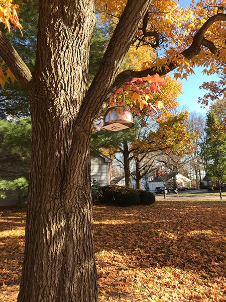

Clue 1 Answer: Hobbiton.
Item: tea kettle
Book hint: The hobbits in _____ heeded less and less the world outside where dark things moved, until they came to think that peace and plenty were the rule in Middle-Earth and the right of all sensible folk. They forgot what labours made possible the long peace of the Shire. They were, in fact, sheltered, but they had ceased to remember it.
"If ever you are passing my way," said Bilbo, "don't wait to knock! Tea is at four; but any of you are welcome at any time!" Then he turned away.
Movie hint: Bilbo: "I've got a few bottles of the Old Winyard left. Twelve ninety-six — very good year. Almost as old as I am! Hahaha! It was laid down by my father. What say we open one, eh?"
Gandalf: "Just tea, thank you."
Neighborhood hint: Barry, May, Amy and Zoey, or next door neighbors.
Clue 2 Answer: Isengard.
Item: Treebeard
Book hint: "Yes," said Saruman. "I did not expect you to show wisdom, even in your own behalf; but I gave you the chance of aiding me willingly, and so saving yourself much trouble and pain. The other choice is to stay here, until the end."
“They took me and they set me alone on the pinnacle of Orthanc” said Gandalf. “There is no descent save by a narrow stair of many thousand steps, and the valley below seems far away. I looked on it and saw that, whereas it had once been green and fair, it was now filled with pits and forges.”
Movie hint: TREEBEARD: OH! Many of these trees were my friends. Creatures I have known from nut and acorn.
PIPPIN: I’m sorry, Treebeard.
TREEBEARD: They had voices of their own. A wizard should know better! There is no curse in elvish, entish or the tongues of men for this treachery! My business is with ________ tonight. With rock and stone.
Neighborhood hint: A tree by a clubhouse.
Clue 3 Answer: Dead Marshes.
Item: Skull
Book hint: Suddenly he stumbled against Frodo, who was standing lost in thought, looking at the pale lights. His hands hung stiff at his sides; water and slime were dripping from them.
“Come, Mr. Frodo!” said Sam. “Don't look at them! Gollum says we mustn't. Let's keep up with him and get out of this cursed place as quick as we can - if we can!”
“All right,” said Frodo, as if returning out of a dream.
Movie hint: Sam: "There are dead things! Dead faces in the water!"
Gollum: "All dead. All rotten. Elves and men and orcses. A great battle long ago. The _______. Yes, yes! That is their name. This way. don't follow the lights."
Neighborhood hint: Chestnut and Sweet Gum.
Clue 4 Answer: Cirith Ungol.
Item: Spider
Book hint: Even as Frodo spoke he felt a great malice bent upon him, and a deadly regard considering him. The radiance of the star glass was broken and thrown back from their thousand facets, but behind the glitter a pale deadly fire began steadily to glow within, a flame kindled in some deep pit of evil thought. Monstruous and abominable eyes they were, bestial and yet filled with purpose and with hideous delight, gloating over their prey trapped beyond all hope of escape.
Movie hint: Gollum: There.
Frodo: What is this place?
Gollum: Master must go inside the tunnel.
Frodo: Now that I'm here, I don't think I want to.
Gollum: It's the only way! Go in ... or go back.
Neighborhood hint: An entrance to the woods.
Clue 5 Answer: Mealy house.
Item: Ring
Final clue:His sword he hung over the mantlepiece. His coat of mail was arranged on a stand in the hall. His magic ring he kept in an envelope on the mantle, and cheifly used it when unpleasant callers came.